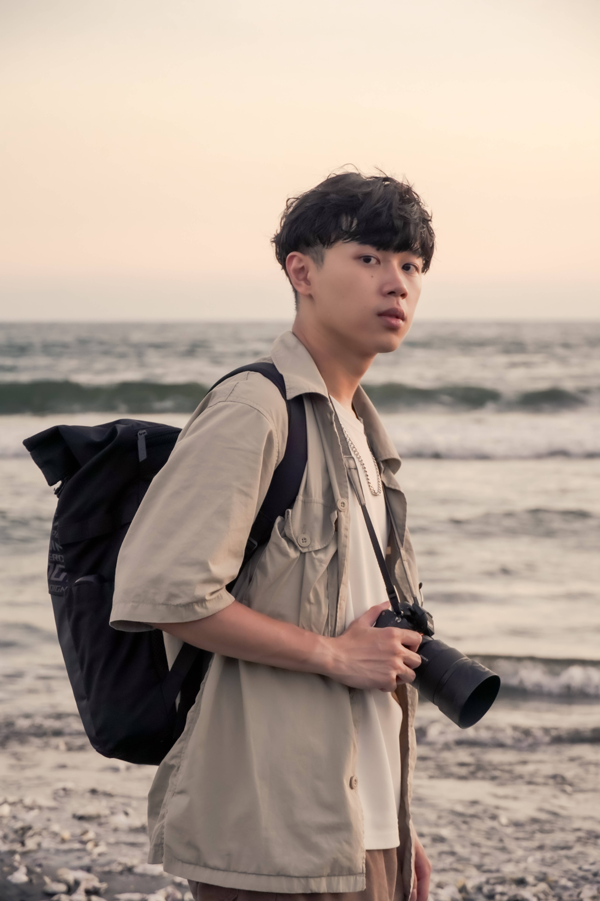

TAIPEI, TAIWAN
AVAILABLE WORLDWIDE
SELECTED WORKS
精選作品
每一個專案，都從觀察開始。


(ABOUT)
HELLO, I AM POTTER
鏡頭是我的眼睛，
設計是我的語言。
我相信好的視覺不只漂亮，更能讓人感覺到溫度。多年來累積了豐富的影像經驗，從品牌形象、產品與空間攝影，到視覺識別與編輯設計，我喜歡參與一個想法成形的每個階段。
品牌形象攝影人像與產品攝影視覺識別設計刊物與版面設計

LET'S CREATE TOGETHER